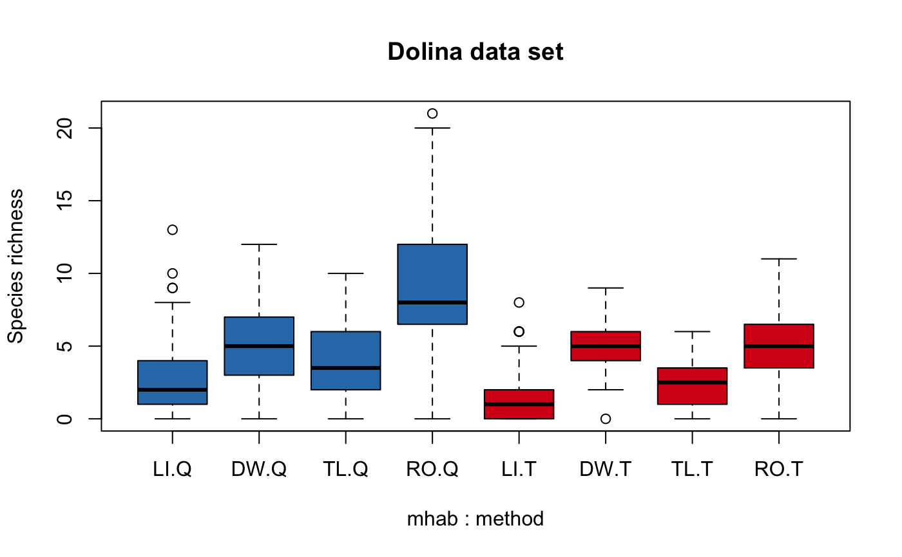

dolina.RdA comprehensive and micro-scale land snail data set from 16 dolinas of the Aggtelek Karst Area, Hungary. Data set containing land snail counts as described in Kemecei et al. 2014.
data("dolina")
A list with 3 elements: xtab is a sample x species matrix with counts,
samp is a data frame with sample level attributes,
taxa is a data frame with scientific names and families for the species.
Land snails were sampled during daylight hours between
16 and 18 of August, 2007. Samples were taken from four
microhabitat types (dolina$samp$microhab, dolina$samp$mhab):
litter (LI), trunks of live trees (TL), dead
wood (also known as coarse woody debris; DW), and rock (RO).
In each of the 16 dolina (dolina$samp$dolina),
seven samples were collected in the litter microhabitat
along a north-south transect. In the case of the other three
microhabitat types, samples were collected from three random
locations per microhabitat type in each dolina.
A total of 256 samples (dolina$samp$sample) were
collected, each consisting 2 sub-samples collected
by 2 sampling methods (dolina$samp$method):
litter samples (Q) and timed search (T).
One liter of litter samples including topsoil were collected to be examined later in the laboratory. Litter samples were collected adjacent to live wood, dead wood and rocks, and not from the wood or rocks themselves. Litter samples in the litter microhabitat were not collected near wood or rocks (minimum distance of 2 meters). During 5 minutes per site of time-restricted direct search we investigated microhabitats in a 1 meter radius circle around the litter sample location, but also including tree or rock surfaces for those microhabitats.
The vertical zone (dolina$samp$stratum,
bottom, middle or edge of the dolinas),
aspect of these sample locations (dolina$samp$aspect),
along with litter depth (dolina$samp$lthick, cm),
and litter moisture (dolina$samp$lmoist,
scored on an ordinal scale: 1=dry,
2=fresh, 3=moist) were also recorded.
Distinction of live animals versus fresh empty shells was not feasible due to the method of sorting dry material and the delay in litter sample processing, so these were combined and constituted the 'fresh' group. Whitened, disintegrating and broken shells constituted the 'broken' group. This 'broken' group was excluded from the data set presented here.
Solymos et al. 2016 and Kemencei et al. 2014.
Kemencei, Z., Farkas, R., Pall-Gergely, B., Vilisics, F., Nagy, A., Hornung, E. & Solymos, P., 2014. Microhabitat associations of land snails in forested dolinas: implications for coarse filter conservation. Community Ecology 15:180--186. <doi:10.1556/ComEc.15.2014.2.6>
Solymos, P., Kemencei, Z. Pall-Gergely, B., Farkas, R., Vilisics, F., Nagy, A., Kisfali, M. & Hornung, E., 2016. Public data from the dolina project. Version 1.0. Zenodo, <doi:10.5281/zenodo.53080>
#> List of 3 #> $ xtab: num [1:512, 1:42] 0 0 0 0 0 0 0 0 0 0 ... #> ..- attr(*, "dimnames")=List of 2 #> .. ..$ : chr [1:512] "10A1Q" "10A1T" "10A2Q" "10A2T" ... #> .. ..$ : chr [1:42] "aacu" "amin" "apol" "apur" ... #> $ samp:'data.frame': 512 obs. of 9 variables: #> ..$ sample : Factor w/ 256 levels "10A1","10A2",..: 1 1 2 2 3 3 4 4 5 5 ... #> ..$ dolina : int [1:512] 10 10 10 10 10 10 10 10 10 10 ... #> ..$ microhab: Factor w/ 4 levels "dead.wood","litter",..: 2 2 2 2 2 2 2 2 2 2 ... #> ..$ mhab : Factor w/ 4 levels "LI","DW","TL",..: 1 1 1 1 1 1 1 1 1 1 ... #> ..$ method : Factor w/ 2 levels "Q","T": 1 2 1 2 1 2 1 2 1 2 ... #> ..$ aspect : Factor w/ 5 levels "eastern","flat",..: 4 4 4 4 4 4 2 2 3 3 ... #> ..$ stratum : Factor w/ 4 levels "1bottom","2middle",..: 4 4 3 3 2 2 1 1 2 2 ... #> ..$ lmoist : num [1:512] 1 1 1 1 1 1 1.5 1.5 1 1 ... #> ..$ lthick : num [1:512] 2 2 2.5 2.5 3 3 0.5 0.5 1.5 1.5 ... #> $ taxa:'data.frame': 42 obs. of 2 variables: #> ..$ scientific.name: Factor w/ 42 levels "Acanthinula aculeata",..: 1 2 32 3 4 5 10 8 13 11 ... #> ..$ family : Factor w/ 17 levels "Aciculidae","Carychiidae",..: 16 10 1 10 3 3 3 3 17 3 ...## species richness by microhabitat and method Richness <- rowSums(dolina$xtab > 0) boxplot(Richness ~ mhab + method, dolina$samp, ylab="Species richness", main="Dolina data set", col=rep(c("#2C7BB6", "#D7191C"), each=4))